|
|
XML Schema Model
The XML Schema Model tool provides a graphical approach to the
definition of the syntactical rules underlying XML documents.
i.e. it provides a method of modeling Document Type Definitions
(DTDs) and XML Schema Documents (XSDs).
The Extensible Markup Language (XML) has become the standard way
of storing and exchanging information in an open textual format.
Each XML document can contain certain tags and associated attribute
values that are appropriate for the application area being supported.
The rules that govern the available tags, attributes and the general
structure of an XML document may be defined in a textual Document
Type Definition (DTD) or an XML Schema Document (XSD) file.
This tool allows the rules to be modeled in a graphical manner and
the textual DTD or XSD file to be generated automatically.
A model checking facility also allows input models to be checked
for consistency etc. prior to code generation.
To view the main multi-CASE help page click here
|
|
|
|
XML Schema Models
XML Schema models contain a number of different types of graphical objects
that are typically combined to produce a hierarchical type structure. When an
XML model is first created (by right clicking on the project folder and selecting
"Add XML Model") a graphical object is created automatically.
This is a single root element that represents the
top level element of the model. The root element cannot be deleted from the
model. The different types of objects used to create an XML Schema model
are graphical representations of the textual objects specified within a DTD
or XSD. Therefore users that are familiar with DTD or XSD grammar should
be able to easily understand the appropriate usage of each graphical object
available. Users that are not familiar with the grammars will still be
able to create meaningful graphical models by becoming aware of the purpose
and usage of each available graphical object. The main objects provided
by the tool are elements (with defined attributes),
grouping elements, entities,
notations and enumerated
types. Compositional association links are
used to show how (parent) elements may contain other (child) elements. Reference
relationship links are used to indicate cross referencing
between elements. See the provided example model.
DTDs and XSDs may also be generated from the Entity
Relationship Diagram tool.
For general information about working with diagrams within the QSEE environment
click here.
The full specification
of the Extensible Markup Language (XML) is available from the World
Wide Web Consortium (W3C) website.

Elements
Definition: Elements are used to define the nature and composition of
information within the XML Schema. Elements are usually the most commonly
used object within a model. An element identifies a particular grouping of information
and is often representative of an object from the domain being modeled, e.g.
Customer, Bank Details, Book. Each element must have a unique name within
the model and can define zero or more related attributes.
An element can also be specified as containing 'data' indicating that data may
be stored directly within the element itself. An element can be specified as
being an 'XML Schema Key' , which indicates that the element acts as part of
its parent's unique identifier during XML Schema
generation.
Elements may also contain zero or more other elements. This is modeled
using association links from the parent elements
to each child element they contain. Elements can be attached and detached
from parent elements anytime during modeling. Elements that are specified as
containing 'data' and also contain child elements are known as mixed
content elements. i.e. Within the conforming XML document the parent
element will be able to contain a combination of data and child elements. Elements
that contain no child elements are usually described as being 'empty', although
they can still contain defined attributes. It is also possible for elements
to be specified as being able to contain 'any' combination of child elements.
A cross reference between elements can be specified using a relationship.
A special kind of element called the root element
is used to model the topmost element within the model.
An element may contain an underlying storyboard
model that allows for the definition of any graphical user interface requirements
related to the element or its attributes.
Representation: An element is represented by a rectangular shaped node
that is (by default) lilac in color. The name of the element is shown at the
top and the names of any defined attributes are shown below. If an element may
contain data then a <<data:type>> label
is shown below the name. If the element may not contain data and does not contain
any child elements then an <<empty>> label is shown. If an
element is specified as being able to contain any child elements then an <<any>>
label is shown instead. e.g. A non-empty element to represent a named
'Category' (child elements not shown)-

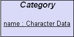
Creation: An element is added by right clicking on the XML Schema
diagram editor or on the model icon within the project tree and selecting the
"Add Element" option from the menu. Position the element outline where
you wish it to be placed on the diagram and left click, enter the name when
prompted and click "OK". It is also possible to create a child element
by right clicking on the element you wish to be the parent and selecting "Add
Child Element".
Rules: An element's name must be present and unique within the model
(with respect to all other elements and the root element). An element can only
be directly contained by one parent element (also see
reference elements).
Operations: Move Forwards/Backwards, Bring to Front, Send to Back, Delete,
Add Attribute, Re-Order Attributes, Add Child Element, Add Child Grouping Element,
Add Child Reference Element, Add Reference Relationship, Attach To Parent Element,
Detach From Parent Element, Is Optional Occurrence, Is Multiple Occurrence,
Is XML Schema Key, Create/View/Delete Underlying Storyboard, Change Element
Color, Edit Element Annotation/Details.
Root Elements
Definition: A root element is a special kind of
element that represents the top level element on a model. Exactly
one root element must exist on each XML Schema Model. The name of the root element
should always be changed to be something relevant to the application area that
the schema is designed to support. e.g. Questionnaire, Account. Since
root elements are just special kinds of elements much of their behavior is the
same as regular elements. i.e. they can define attributes,
contain child elements etc. Root elements however cannot be deleted and
cannot be directly attached to a parent element via an
association.
Representation: A root element is represented by a three dimensional
cube shaped node that is (by default) lilac in color. The name of the element
is shown at the top and the names of any defined attributes are shown below.
If the root element may contain data then a <<data:type>>
label is shown below the name. If the root element may not contain data and
does not contain any child elements then an <<empty>> label is shown.
If the root element is specified as being able to contain any child elements
then an <<any>> label is shown instead. e.g. An empty root
element to represent a book.
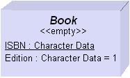
Creation: A root element is automatically created on all XML Schema
Model diagrams. A root element cannot be created by the user.
Rules: Only one root element may exist on a single model. A root
element cannot be deleted. A root element's name must be present and
unique within the model (with respect to all other elements). A root element
cannot be directly attached to a parent element (use
reference elements).
Operations: Move Forwards/Backwards, Bring to Front, Send to Back, Delete,
Add Attribute, Re-Order Attributes, Add Child Element, Add Child Grouping Element,
Add Child Reference Element, Add Reference Relationship, Create/View/Delete
Underlying Storyboard, Change Root Color, Edit Root Annotation/Details.
Grouping Elements
Definition: Grouping elements are a special kind of
element that are used to define a collection of child elements.
Grouping elements exist purely to allow management of other elements and
therefore do not define their own attributes. They should however always
contain two or more child elements (since this is the purpose of their
existence) linked using associations. Grouping
elements may be used to define a reusable group of child elements that may then
be referenced from several places within the
model, i.e. they provide a mechanism for re-use. Grouping elements may also be
used to identify a collection of child elements that are mutually exclusive,
i.e. only one element from the group may exist within the parent at any one
time. The latter of these is known as a choice grouping element
and this fact is reflected by the label shown within the element (and the dashed
lines of attached associations). A grouping
element may optionally be given a name. This is only necessary if the
grouping element needs to be referenced from
elsewhere within the model, since only named elements can be referenced.
Representation: A grouping element is represented by a rectangular
shaped node with rounded ends that is (by default) green in color. The name of
the grouping (if specified) is shown at the top of the node. If the grouping
element is specified as containing mutually exclusive child elements then a
<<choice>> label is shown in the middle of the node, otherwise a <<group>> label
is shown. e.g. a choice grouping element and a regular grouping element.
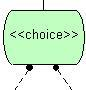
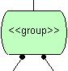
Creation: A grouping element is added by right clicking on the XML Schema diagram editor or on the model icon within the project tree and selecting
the "Add Grouping Element" option from the menu. Position the element
outline where you wish it to be placed on the diagram and left click. It is
also possible to create a child grouping element by right clicking on the element
you wish to be the parent and selecting "Add Child Grouping Element".
Rules: If present, a grouping element's name must be unique within the
model (with respect to all other grouping elements). A grouping element can only
be directly contained by one parent element (also see
reference elements). Choice grouping elements
should not contain the same child element more than once (i.e. via reference
elements).
Operations: Move Forwards/Backwards, Bring to Front, Send to Back, Delete,
Add Child Element, Add Child Grouping Element, Add Child Reference Element,
Attach To Parent Element, Detach From Parent Element, Is Optional Occurrence,
Is Multiple Occurrence, Is Choice Grouping, Create/View/Delete Underlying Storyboard,
Change Grouping Color, Edit Grouping Annotation/Name.
Reference Elements
Definition: A reference element is used to allow a reference to be made
to an existing element within the model. All element types can be referenced,
i.e. elements, the root element
and grouping elements. A reference element
effectively acts as a proxy element and allows the same element to be contained
by more than one parent. Reference elements do not maintain any data themselves,
they simply derive it from the element being referenced. A reference element
always has a single host element that it references. If the host element is
renamed then the name of the reference element is automatically changed.
If the host element is deleted then all reference elements that refer to the
host are also deleted. Reference elements are most commonly used to reference
named grouping elements during the application
of re-use. They can also be used to allow the same element to be contained by
different elements within the model (see example). Reference
elements that refer to elements as their host can be
specified as being an 'XML Schema Key' , which indicates that the referenced
element acts as part of its parent's unique identifier during XML
Schema generation.
A reference element may also contain an underlying storyboard
model that allows for the definition of any graphical user interface requirements
related to the element or its attributes. When used on a reference element the
given storyboard may be different from any storyboard associated with the original
element, thus providing alternative storyboard views when required.
Representation: A reference element is represented by a node that
derives its shape and color from the element being referenced. The name of the
reference (which will always match its host element) is shown at the top of the
node just above a <<ref>> label, which indicates the special nature of the
element. e.g. A reference to a Question element.
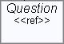
Creation: A reference element is added by right clicking on the
element you wish to be the parent and selecting "Add Child Reference Element"
from the menu. Position the reference outline where you wish it to be placed on
the diagram and left click, select the name of the element to be referenced and
click "OK".
Rules: A reference element must reference an element defined on the
same model as the reference.
Operations: Move Forwards/Backwards, Bring to Front, Send to Back, Delete,
Attach To Parent Element, Detach From Parent Element, Is Optional Occurrence,
Is Multiple Occurrence, Is XML Schema Key, Show Where Element Defined, Create/View/Delete
Underlying Storyboard, Edit Reference Annotation/Details.
Attributes
Definition: Attributes are used to identify and define specific pieces
of information that may be recorded by a particular element. Attributes
are contained (owned) by either an element or the root
element. Attributes have a unique name (within their containing element),
a type to indicate the nature of the data to be stored, an optional default
value and optional constraints. If a default value is given then this
will be assigned to the attribute within the XML document if no other value
is specified. An attribute that has being given a default value can also
be specified as 'fixed', which indicates that the attribute value is in fact
constant and can only ever equal the default value. An attribute can be
specified as being 'required', which indicates that a value must be present
for the attribute within a conforming XML document. An attribute can be specified
as being an 'XML Schema Key' , which indicates that the attribute acts as part
of its owning element's unique identifier during XML
Schema generation.
The available attribute types are described below. The type of an
attribute may also be either a user defined
enumerated type or a notation enumerated
type.
| Type |
Description |
DTD Mapping |
XSD Mapping |
| Character Data |
The attribute value will be character data, i.e. a string
of characters. |
CDATA |
xsd:string |
| Unique ID |
The attribute value will be a unique ID. |
ID |
ID |
| Element Ref ID |
The attribute value will be the ID of another element. |
IDREF |
IDREF |
| Element Ref ID List |
The attribute value will be a list of IDs of other elements. |
IDREFS |
IDREFS |
| Name Token |
The attribute value will be a valid XML name (a single word
string). |
NMTOKEN |
NMTOKEN |
| Name Token List |
The attribute value will be a list of valid XML names. |
NMTOKENS |
NMTOKENS |
| Entity |
The attribute value will be the name of an unparsed
entity. |
ENTITY |
ENTITY |
| Entity List |
The attribute value will be a list of unparsed
entity names. |
ENTITIES |
ENTITIES |
| String |
The attribute value will be a string of characters. |
CDATA |
xsd:string |
| Boolean |
The attribute value will be true or false, 1 or 0. |
CDATA |
xsd:boolean |
| Decimal |
The attribute value will be a decimal number possible containing a fractional
part. |
CDATA |
xsd:decimal |
| Float |
The attribute value will be a floating point number possibly represented
using a mantissa and exponent. |
CDATA |
xsd:float |
| Double |
The attribute value will be a double precision floating point number
possibly represented using a mantissa and exponent. |
CDATA |
xsd:double |
| Duration |
The attribute value will represent a duration of time, designating Gregorian
year, month, day, hour, minute, and second components. |
CDATA |
xsd:duration |
| Date & Time |
The attribute value will represent a date and time. |
CDATA |
xsd:dateTime |
| Date |
The attribute value will represent a date. |
CDATA |
xsd:date |
| Time |
The attribute value will represent a time. |
CDATA |
xsd:time |
| Year & Month |
The attribute value will represent a specific gregorian month in a specific
gregorian year. |
CDATA |
xsd:gYearMonth |
| Month & Day |
The attribute value will represent a specific month and day (that will
re-occur every year). |
CDATA |
xsd:gMonthDay |
| Year |
The attribute value will represent a gregorian calendar year. |
CDATA |
xsd:gYear |
| Month |
The attribute value will represent a month. |
CDATA |
xsd:gMonth |
| Day |
The attribute value will represent a day. |
CDATA |
xsd:gDay |
| Hex Binary |
The attribute value will be arbitrary hex-encoded binary data. |
CDATA |
xsd:hexBinary |
| Base64 Binary |
The attribute value will be Base64-encoded arbitrary binary data. |
CDATA |
xsd:base64Binary |
| Uniform Resource Identifier |
The attribute value will be a Uniform Resource Identifier Reference
(URI). |
CDATA |
xsd:anyURI |
| Qualified Name |
The attribute value will be a XML qualified name. |
CDATA |
xsd:QName |
| Notation |
The attribute value will be the qualified name of a Notation defined
within the schema. |
CDATA |
NOTATION |
| Token |
The attribute value will be a tokenized string, i.e. a string with no
leading or trailing spaces, no carraige returns, line-feeds or tabs. |
CDATA |
xsd:token |
| Language |
The attribute value will identify a natural lanugage. See On-line definition. |
CDATA |
xsd:language |
| Name |
The attribute value will be a valid XML name. |
CDATA |
xsd:Name |
| Non-Colonized Name |
The attribute value will be a XML "non-colonized" Name. i.e.
A Qualified Name without the prefix and colon. |
CDATA |
xsd:NCName |
| Integer |
The attribute value will be a whole number. |
CDATA |
xsd:integer |
| Long |
The attribute value will be a whole number (with a larger range than
Int) |
CDATA |
xsd:long |
| Int |
The attribute value will be a whole number (with a smaller range than
Long) |
CDATA |
xsd:int |
| Short |
The attribute value will be a whole number (with a smaller range than
Int) |
CDATA |
xsd:short |
| Byte |
The attribute value will be a whole number between -128 and +127 inclusive. |
CDATA |
xsd:byte |
| Non-Positive Integer |
The attribute value will be a whole number with a value <=0. |
CDATA |
xsd:nonPositiveInteger |
| Non-Negative Integer |
The attribute value will be a whole number with a value >=0. |
CDATA |
xsd:nonNegativeInteger |
| Negative Integer |
The attribute value will be a whole number with a value <0. |
CDATA |
xsd:negativeInteger |
| Positive Integer |
The attribute value will be a whole number with a value >0. |
CDATA |
xsd:positiveInteger |
| Unsigned Long |
The attribute value will be a whole number with a value >=0 (with
a larger range than Unsigned Int) |
CDATA |
xsd:unsignedLong |
| Unsigned Int |
The attribute value will be a whole number with a value >=0 (with
a smaller range than Unsigned Long) |
CDATA |
xsd:unsignedInt |
| Unsigned Short |
The attribute value will be a whole number with a value >=0 (with
a smaller range than Unsigned Int) |
CDATA |
xsd:unsignedShort |
| Unsigned Byte |
The attribute value will be a whole number between 0 and 255 inclusive. |
CDATA |
xsd:unsignedByte |
Representation: Attributes are shown as single lines of text within
their containing element. Attributes that are specified as being 'fixed' are
shown in italics. Attributes that are specified as being 'required' are
underlined. If a default value is supplied it is show at the right of the
text prefixed by an equals (=) sign. The general form of an attribute is
<name> : <type> [=<default_value>]. The example below shows several
attributes contained by a Person element. The 'person id' is specified as
being required (since it is underlined). The marital status attribute has
a default value of "single".
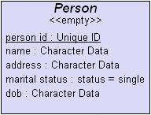
Creation: An attribute is added by right clicking on the element in
which the attribute is to be defined and selecting "Add Attribute" from the
menu. When prompted, enter the name, select the type and specify any default
value and/or constraint for the attribute and click "OK".
Rules: An attribute's name must be present and unique (with respect to
all other attributes within the containing element). Only one attribute of type
'Unique ID' can be defined within an element. An attribute of type 'Unique ID'
cannot be fixed or have a default value specified. Attributes that are specified
as being required must not have a default value. Attributes that are specified
as being fixed must have a default value. Only one attribute based on a
notation enumerated type can be defined
within an element. Any given default value must be appropriate for the type of
the attribute.
Operations: Move Forwards/Backwards, Bring to Front, Send to Back, Delete,
Show Where Type Defined, Is XML Schema Key, Change Text Color, Edit Attribute
Annotation/Details.
Associations
Definition: Associations are used to form a compositional link between
elements (including the root
element and grouping elements) and the child
elements they may contain. Therefore they are used to define what elements
may be contained by other elements, i.e. the content model. An association
links from exactly one parent to exactly one child. A child element may only
be directly contained within one parent (i.e. forming an hierarchical type model),
it is possible however for a child to be contained by more than one parent by
making use of reference elements. Child elements
are seen to be contained by their parents in an order determined by their relative
vertical position. i.e. the ordering of child elements works from left to right.
This fact is important when modeling certain constructs, where a sequence of
children needs to be represented in an explicit order. It also has an effect
during code generation.
As well as identifying how one element contains another, associations also
signify certain constraints with respect to the number of child elements that
may appear. This information is often referred to as cardinality or
multiplicity and is identified using graphical symbols shown at the end
of the association closest to the child element. The current cardinality is
specified by selecting or deselecting the "Is Multiple Occurrence" and "Is
Optional Occurrence" options within either the association menu or the child
element menu. The four possible combinations of cardinality indicate,
i) exactly one child
element must be present. (not optional, not multiple) - default
ii) one or more child elements must be present, (not optional,
is multiple)
iii) zero or one child element may be present, (is optional,
not multiple)
iv) zero or more child elements may be present. (is
optional, is multiple)
Representation: An association is represented as a line between two
elements. A small solid dot is shown next to the parent element in order
to allow the direction of the association to be always determined. If an association
represents an exclusive choice (i.e. only one of the children may be present
at any one time) then the line is dashed at the end closest to the parent. e.g.
An association between a 'Parent' and its 'Child' element.
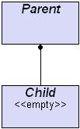
Each available cardinality is represented as symbols shown next to the
child element on the association. A crows foot symbol represents multiple
occurrence and an 'O' symbol represents optional occurrence, (see x-refs to
descriptions above). i.e.
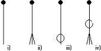
note: An association connected to a parent element
that is specified as being able to contain 'character data' replaces the small
dot with a small circular cross. This indicates that the parent is a mixed
content element, which sometimes has an effect during code
generation.
Creation: Associations are created automatically whenever a child element
is added to a parent element using the "Add Child ....." option from
an element menu. An element that has no parent assigned can be associated
with a parent using the "Attach to Parent Element" option from its
menu. In this case use the mouse to position the association end over
the required parent and left click to attach.
Rules: Associations must link from a parent element (including the
root and grouping elements) to a child element, grouping element, or reference
element.
Operations: Move Forwards/Backwards, Bring to Front, Send to Back,
Delete, Add/Remove Link Point, Detach From Parent Element, Is Optional
Occurrence, Is Multiple Occurrence, Change Link Color, Edit Association
Annotation.
Relationships
Definition: Relationships are used to define a cross reference link
between elements. The presence of a reference relationship
indicates that instances of the source element refer to instances of the destination
element within a conforming XML Document. Relationships are unidirectional in
nature and may only originate from element type nodes
within the model. Relationships may target either elements
or reference elements (providing their host
is an element). An optional relationship name and element role name may be specified
to help describe the purpose of the relationship.
As well as identifying a cross reference between elements, relationships also
signify certain constraints with respect to the number of target elements that
may be referenced. This information is often referred to as cardinality
or multiplicity and is identified using graphical symbols shown at the
end of the relationship closest to the target element. The current cardinality
is specified by selecting or deselecting the "Is Multiple Occurrence"
and "Is Optional Occurrence" options within the relationship menu.
The four possible combinations of cardinality indicate,
i) exactly one element
must be referenced. (not optional, not multiple) - default
ii) one or more elements must be referenced, (not optional,
is multiple)
iii) zero or one element may be referenced, (is optional,
not multiple)
iv) zero or more elements may be referenced. (is optional,
is multiple)
Representation: A relationship is represented as a directional line
between two elements. An arrow is shown next to the target element in
order to allow the direction of the relationship to be always determined. If
given, the relationship and role names are shown close the to relationship line.
e.g. A relationship between a 'Student' and 'Class' indicating that a student
'Takes' one or more classes.
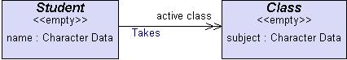
Each available cardinality is represented as symbols shown next to the
target element on the relationship. A double arrow symbol represents multiple
occurrence and an 'O' symbol represents optional occurrence, (see x-refs to
descriptions above). i.e.
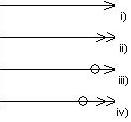
Creation: A relationship is added by right clicking on the element,
from which the reference is to originate, and selecting "Add Reference
Relationship" from the menu. Use the mouse to position the relationship
end over the required target element (or reference element) and left click to
attach.
Rules: Relationships must link from an element to either an element
or a reference element (providing their host is an element). The target element
of a relationship should have a key defined (if correct XML Schema generation
is required).
Operations: Move Forwards/Backwards, Bring to Front, Send to Back, Delete,
Add/Remove Link Point, Is Optional Occurrence, Is Multiple Occurrence, Change
Link Color, Edit Relationship Annotation/Details.
Entities
Definition: Entities provide a mechanism for associating a given name
with either a piece of character data (i.e. a string) or a reference to an external
file. The given name can then be used within a conforming XML document
to indicate the presence of the associated information, i.e. when the XML is
processed references to the entity name are replaced by the given text or the
content of the referenced file. Entities are a useful mechanism for defining
a constant value or content that is to be used in several different places within
a document. The fact that entities allow specific values to be decoupled and
referenced only by name improves readability, reusability and changeability
of an XML document. i.e. any changes to the entity value are automatically reflected
in all the places where it is referenced from within the document.
Entities may be classified as being either internal (when their value
holds character data), or external (when their value holds a reference
to a file). By default an entity is internal, but it may be specified as being
external by selecting the "Is External" menu option. In some
circumstances an external entity may reference a file that contains data that
is not parsable by the XML processor, e.g. an image file. These are often
referred to as unparsed entities and may
be specified by associating the entity value with a notation
(which identifies the data format/processing requirements) by using the "Associate
with Notation" menu option, available by right clicking on the external
entity value text. Unparsed entities may be specified as the value of entity
typed attributes.
note: It is recommended that entities are not used if the
intention of the user is to generate XML Schema Code (XSD). This is because
XSD does not yet fully support definition of entities. No such restriction exists
for DTD generation.
Within a conforming XML document entities are referenced using the &<entity_name>;
notation, e.g. ©right_message;
Representation: An entity is represented by a rectangular shaped node
that is (by default) peach in color. The name of the entity is shown at the top
just above an <<entity>> label, which indicates the special nature of the
object. The value associated within the entity is shown below within the node.
e.g. An internal entity named 'Author' with a value of 'Dr. Mark Dixon'.
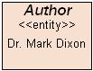
If an entity is specified as being external then the label below the name is
set to <<ext_entity>>. e.g. An external entity named 'Specification'
with a value that refers to a file on the local system.
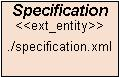
If an entity is specified as being an unparsed entity then the label below
the name is set to <<unparsed_entity>>. In addition, the name of
the associated notation is shown in brackets following
the value. e.g. An unparsed entity named 'Map Image' with a value representing
the location of a map image file. The formatting/processing requirements for
the image are defined by a notation named 'BMP'.
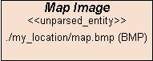
Creation: An entity is added by right clicking on the XML Schema
diagram editor or on the model icon within the project tree and selecting the
"Add Entity" option from the menu. Position the entity outline where
you wish it to be placed on the diagram and left click, enter the name and value
when prompted and click "OK".
Rules: An entity's name must be present and unique within the model
(with respect to all other entities). An entity should always be given a value.
External entities should refer to files that are accessible to the XML document
during processing.
Operations: Move Forwards/Backwards, Bring to Front, Send to Back,
Delete, Is External, Change Entity Color, Edit Entity Annotation/Details.
Notations
Definition: A notation is used to provide information about the format
and/or processing requirements of data either stored within (or referenced by)
a conforming XML document. Notations are commonly used when data (usually
binary) needs to be processed using specific 3rd party applications. i.e. data
that cannot be parsed by a regular XML processor. A notation associates
a name with a value that represents either a format and/or external application
required to process stored data. Notations are most commonly used in association
with unparsed external entity values, to help
identify a method of processing binary type data. They can also be used
to identify the format of elements that contain an attribute based on a notation
enumerated type.
Representation: A notation is represented by a rectangular shaped node
that is (by default) light blue in color. The name of the notation is shown at
the top just above a <<notation>> label, which indicates the special nature of
the object. The value associated within the notation is shown below within the
node. e.g. A notation named 'bmp' that refers (in this case) to an application
capable of displaying the data.
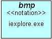
Notation values are often long pieces of text, therefore the name is sometimes
truncated within the notation node. The value however is always fully
stored even if it is not displayed, e.g. A notation named 'gif89a' that refers
to information about the format GIF89a. The full notation value stored
is actually "-//Compuserve//NOTATION Graphic Interchange Format 89a//EN".
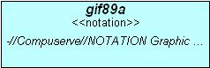
Creation: A notation is added by right clicking on the XML Schema
diagram editor or on the model icon within the project tree and selecting the
"Add Notation" option from the menu. Position the notation outline
where you wish it to be placed on the diagram and left click, enter the name
and value when prompted and click "OK".
Rules: A notation's name must be present and unique within the model
(with respect to all other notations). A notation should always be given a
value.
Operations: Move Forwards/Backwards, Bring to Front, Send to Back,
Delete, Change Notation Color, Edit Notation Annotation/Details.
Enumerated Types
Definition: Enumerated types allow the definition of a number of
unique character strings, which determine the set of available values that can
legally be assigned to an attribute. An
enumerated type is given a name that may then be selected as the type of an
attribute. i.e. they allow the definition of a domain specific attribute type.
If an attribute is associated with an enumerated type then the value assigned to
that attribute (within a conforming XML document) must be one of those
defined within the enumerated type. Enumerated types are typically used to
restrict attribute values to a small number of possible options. The values
defined within an enumerated type are represented by enumeration labels.
An enumerated type is meaningless unless it has at least one enumeration label
(value) defined.
Representation: An enumerated type is represented by a rectangular
shaped node that is (by default) yellow in color. The name of the enumerated
type is shown at the top just above an <<enum>> label, which indicates the
special nature of the object. The enumeration labels defined within the type are
shown below the title and type label. e.g. An enumerated type called 'level'
that contains three enumeration labels, 'easy', 'intermediate', and 'hard'.
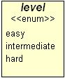
Creation: An enumerated type is added by right clicking on the XML Schema diagram editor or on the model icon within the project tree and selecting
the "Add Enumerated Type" option from the menu. Position the type
outline where you wish it to be placed on the diagram and left click, enter
the name when prompted and click "OK".
Rules: An enumerated type's name must be present and unique within the
model (with respect to all other enumerated and notation enumerated types). An
enumerated type should contain at least one enumeration label. All contained
enumeration labels must be unique within the context of the enumeration type.
Operations: Move Forwards/Backwards, Bring to Front, Send to Back,
Delete, Add Enumeration Label, Re-Order Labels, Change Type Color, Edit Type
Annotation/Name.
Notation Enumerated Types
Definition: Notation enumerated types allow the identification of a
number of unique notations, which determine the set
of available values that can legally be assigned to an
attribute. A notation enumerated type is given a name that may then
be selected as the type of an attribute. i.e. they allow the definition of a
domain specific attribute type. If an attribute is associated with a notation
enumerated type then the value assigned to that attribute (within a conforming
XML document) must be one of those defined within the notation enumerated
type. Notation enumerated types are often used to associate a defined
notation with the value of an
attribute within an element. When used in this
way the element typically contains data stored in an unparsable format that
must be processed by a specialized application. The value of the attribute
(which is a notation) is used to help identify the format
or an application to perform the processing. The notations
identified within an enumerated type are represented by enumeration labels.
A notation enumerated type is meaningless unless it has at least one enumeration
label (notation) defined. All notations identified within a notation enumerated
type must exist on the same model as the type.
Representation: A notation enumerated type is represented by a
rectangular shaped node that is (by default) light blue in color. The name of
the notation enumerated type is shown at the top just above a <<notation_enum>>
label, which indicates the special nature of the object. The notation
enumeration labels defined within the type are shown below the title and type
label. e.g. A notation enumerated type called 'image type' that contains three
enumeration labels that refer to the, 'bmp', 'gif', and 'jpeg' notations.
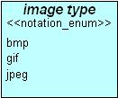
Creation: A notation enumerated type is added by right clicking on the
XML Schema diagram editor or on the model icon within the project tree and
selecting the "Add Notation Enumerated Type" option from the menu.
Position the type outline where you wish it to be placed on the diagram and
left click, enter the name when prompted and click "OK".
Rules: A notation enumerated type's name must be present and unique
within the model (with respect to all other enumerated and notation enumerated
types). A notation enumerated type should contain at least one enumeration
label. All contained enumeration labels must refer to different notations
present on the model.
Operations: Move Forwards/Backwards, Bring to Front, Send to Back,
Delete, Add Enumeration Label, Re-Order Labels, Change Type Color, Edit Type
Annotation/Name.
Code generation
Code generation allows the translation of a graphical XML Schema Model into
a representative Data Type Definition (DTD) or XML Schema Document
(XSD) file. During the generation process spaces are removed
from the names of elements, entities etc. and replaced with underscores.
The ordering of contained child elements is resolved from left to right. Generated
code is output to a file. The name of this file must be specified by the
user, it is recommended that the default suffix is left unchanged (since this
is appropriate for the type of file being generated). Once the code has
been generated it may be viewed from within the tool or an appropriate editor.
An option is provided for "Verbose Code Generation" that instructs
the tool to provide explanatory comments within the generated code. These
comments are useful to users who are not fully familiar with the DTD or XSD
grammar. Most objects within an XML Schema Model have the same name as
their DTD/XSD counterparts, thus it is not too difficult to see the relationship
between the model and the generated code. See the example
for a sample model along with the DTD and XSD
that is generated from the model.
During DTD generation the elements contained by mixed content parent
elements are always generated as if contained within
a multiple choice grouping. Therefore the cardinality
and optionality of the child elements as indicated by the associations
is ignored. This is necessary because of the specific way in which mixed content
elements must be represented within DTDs. This behavior is not performed during
XSD generation since the mixed content model of the XML Schema grammar is somewhat
stronger.
During generation of XML Schema Documents (XSD) any elements
or attributes which are marked as 'XML Schema Key'
are used to define the unique key on the parent element. Entities
are not well supported by the XSD grammar and thus their use should be avoided
if the intended code target is an XML Schema Document.
Example
Below is an example model created using the XML Schema Model tool. Within this
example a reference element has been used to
allow 'Question' elements to be contained within a 'Category'
or within the 'Questionnaire' element. The choice
grouping indicates that a 'Questionnaire' consists of either one or more
'Categories', or one or more 'Questions' (but not both). A 'Question' may be
either multichoice or require a textual response. In the former case the the
correct multichoice answer is referenced via the 'correct_answer' relationship.
In the latter case a suggested answer is stored as data within the question
element. Two enumerated types ('level' and 'question
type') are defined and used as the type of two attributes
('difficulty level' and 'question type' respectively).
The DTD and XSD code generated form this
model is shown below.
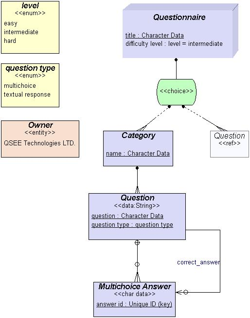
The DTD code generated from this model is shown below.
Verbose code generation was turned off during this generation.
<!-- Auto-Generated DTD by QSEE-SuperLite multi-CASE (c) 2001-2004 QSEE-Technologies Ltd.
www.qsee-technologies.com
note: spaces within Element/Entity names etc. have been replaced by underscores (_)
Verbose generation: OFF
Root Element Name :Questionnaire
-->
<!ENTITY Owner "QSEE Technologies LTD.">
<!-- Definition of ELEMENT types -->
<!ELEMENT Questionnaire ((Category+ | Question+))>
<!ATTLIST Questionnaire title CDATA #REQUIRED>
<!ATTLIST Questionnaire difficulty_level (easy|intermediate|hard) "intermediate">
<!ELEMENT Category (Question+)>
<!ATTLIST Category name CDATA #REQUIRED>
<!ELEMENT Question (#PCDATA | Multichoice_Answer)*>
<!ATTLIST Question question CDATA #REQUIRED>
<!ATTLIST Question question_type (multichoice|textual_response) #REQUIRED>
<!ATTLIST Question Multichoice_Answer_REF IDREF #IMPLIED>
<!ELEMENT Multichoice_Answer (#PCDATA)>
<!ATTLIST Multichoice_Answer answer_id ID #REQUIRED>
<!-- End of DTD file auto-generation -->
The XSD code generated from the example
model is shown below. Verbose code generation was turned off during this
generation.
<!-- Auto-Generated XML Schema by QSEE-SuperLite multi-CASE (c) 2001-2004 QSEE-Technologies Ltd.
www.qsee-technologies.com
note: spaces within Element/Entity names etc. have been replaced by underscores (_)
Verbose generation: OFF
Root Element Name :Questionnaire
-->
<xsd:schema xmlns:xsd="http://www.w3.org/2001/XMLSchema">
<xsd:annotation>
<xsd:documentation xml:lang="en">
XML Schema file for XML Schema Model
</xsd:documentation>
</xsd:annotation>
<xsd:element name="Questionnaire" type="QuestionnaireType"/>
<!-- Definition of Element Types -->
<!-- =========================== -->
<xsd:complexType name="QuestionnaireType">
<xsd:sequence>
<xsd:choice>
<xsd:element name="Category" type="CategoryType" maxOccurs="unbounded"/>
<xsd:element name="Question" type="QuestionType" maxOccurs="unbounded">
<xsd:keyref name="Question1_FK1" refer="Multichoice_Answer_Key">
<xsd:selector xpath="./Multichoice_Answer_REF"/>
<xsd:field xpath="@answer_id"/>
</xsd:keyref>
</xsd:element>
</xsd:choice>
</xsd:sequence>
<xsd:attribute name="title" type="xsd:string" use="required"/>
<xsd:attribute name="difficulty_level" type="levelKind" default="intermediate"/>
</xsd:complexType>
<!-- end of type definition for 'Questionnaire' element -->
<xsd:complexType name="CategoryType">
<xsd:sequence>
<xsd:element name="Question" type="QuestionType" maxOccurs="unbounded">
<xsd:keyref name="Question_FK1" refer="Multichoice_Answer_Key">
<xsd:selector xpath="./Multichoice_Answer_REF"/>
<xsd:field xpath="@answer_id"/>
</xsd:keyref>
</xsd:element>
</xsd:sequence>
<xsd:attribute name="name" type="xsd:string" use="required"/>
</xsd:complexType>
<!-- end of type definition for 'Category' element -->
<xsd:complexType name="QuestionType" mixed="true">
<xsd:sequence>
<xsd:sequence>
<xsd:element name="Multichoice_Answer" type="Multichoice_AnswerType" minOccurs="0" maxOccurs="unbounded">
<xsd:key name="Multichoice_Answer_Key">
<xsd:selector xpath="."/>
<xsd:field xpath="@answer_id"/>
</xsd:key>
</xsd:element>
</xsd:sequence>
<xsd:sequence>
<xsd:element name="Multichoice_Answer_REF" minOccurs="0">
<xsd:complexType>
<xsd:attribute name="answer_id" type="xsd:ID" use="required"/>
</xsd:complexType>
</xsd:element>
</xsd:sequence>
</xsd:sequence>
<xsd:attribute name="question" type="xsd:string" use="required"/>
<xsd:attribute name="question_type" type="question_typeKind" use="required"/>
</xsd:complexType>
<!-- end of type definition for 'Question' element -->
<xsd:complexType name="Multichoice_AnswerType">
<xsd:simpleContent>
<xsd:extension base="xsd:string">
<xsd:attribute name="answer_id" type="xsd:ID" use="required"/>
</xsd:extension>
</xsd:simpleContent>
</xsd:complexType>
<!-- end of type definition for 'Multichoice_Answer' element -->
<xsd:simpleType name="levelKind">
<xsd:restriction base="xsd:string">
<xsd:enumeration value="easy"/>
<xsd:enumeration value="intermediate"/>
<xsd:enumeration value="hard"/>
</xsd:restriction>
</xsd:simpleType>
<xsd:simpleType name="question_typeKind">
<xsd:restriction base="xsd:string">
<xsd:enumeration value="multichoice"/>
<xsd:enumeration value="textual_response"/>
</xsd:restriction>
</xsd:simpleType>
<!-- Definition of Elements to represent Entity types -->
<!-- ================================================ -->
<xsd:element name="Owner" type="xsd:token" fixed="QSEE Technologies LTD."/>
</xsd:schema>
<!-- End of XML Schema file auto-generation -->